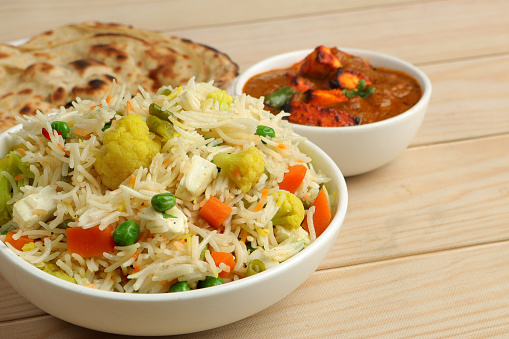

Home

Paneer rice( very tasty and healthy!!)
ingredients:
- long rice
- oil
- cottage cheese
- 2 cups water
- spices
- chopped veggies
- bit of salt
warning:takes a bit long to make around 30 minutes but, believe me
it's worth it!
The process:
- cook the rice
- add oil to the pan and heat
- lightly fry the veggies and add some spices like black pepper
- add some more water and add the paneer into it and cook
- add salt and then the cottage cheese cut into cubes
- cook for 5 more minutes
- this cool dish is ready to eat!!!